Apart from various performance enhancements of the existing functionality, Adroit provides the following additions:
IMPORTANT: HASPs are NOT backwardly compatible with previous product versions due to a change in the internal licensing structure of the HASPs.
The Adtech Licensing Utility allows you to get, view and/or update your Adroit product license.
The product license is now a .XML document to make it easier to read and is displayed in the License tab.
IMPORTANT: The former Remote Nodes licenses that applied to all types of clients have been DISCONTINUED. These have now been replaced by the following client specific node licenses, each of which have different costs:
Clients: typically Operators and/or Designers and
Web Clients: typically Performance Anywhere clients.
Remote Desktop (RDP) clients can now get a free node connection to obtain engineering access to the Agent Server, by adding and configuring the RDAdminName WG.INI registry string value.
Note: By default this registry entry does not exist and therefore all Remote Desktop (RDP) clients are subject to node licensing. This registry value must be created and set to the required Windows username to establish free connections for this user.
The OEM (separately-licensed) components are no longer specified by their associated OEM codes but now included as separate textual entries in the product license, so that users can easily see exactly which components they are currently licensed for.
Tip: Only the OEM components that you are licensed for will appear.
All product licenses have a GLOBAL expiry and can also support product-specific expiries, which can be used for product trials.
.V2C (Vendor to Customer) and .C2V (Customer to Vendor) files are now used to create and update product licenses instead of using .RUS files.
Important differences between a HASP and a soft license:
A HASP license is bound to a USB HASP, which has a specific serial number - this is therefore portable and not restricted to a specific computer, but has associated security risks and needs to be insured at your own risk.
A Soft license is bound to a specific computer and therefore cannot be transferred to another computer. Therefore if the computer fails then the soft license will no longer work.
IMPORTANT: The install can no longer be installed if the name of the user running it is called "Administrator", since this COULD be the built-in Windows Administrator account, which is DISALLOWED because UAC is automatically disabled whenever this built-in Administrator account is used, which causes a myriad of problems to occur.
When installing the Agent Server, the Component Configuration Settings dialog provides the Configure services checkbox that allows you to choose if you want to install the Agent Server Service and to configure the startup of this (and the SmartUI Server) service.
If you choose to (the default option) then it is now mandatory to specify both a username and password for the Agent Server Service, which should be those of a user that has the rights / permissions to access the network resources (printers, SQL Express, network shares) that the Agent Server requires access to. Hence this dialog has been reorganised as follows:
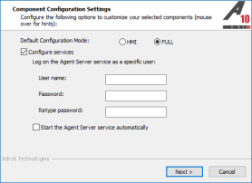
Note: If you choose not to install the Agent Server Service, you can do this later in the Agent Server Configuration page of the Adroit Config Editor.
The install installs/updates the latest INSTALLABLE drivers files, typically in the Drivers sub folder of the Adroit installation folder. When users want to install a new driver via the Config Editor this folder is now selected by default. While the drivers that are automatically installed by the install, such as the OPC Client driver are automatically installed and/or updated. For all other drivers, we do not touch the installed drivers and the onus is upon the user to update the necessary drivers.
When the installed version is same as the version of the install, a message box is displayed to allow users to select whether they want to reinstall the existing components or they can opt to install additional components that have not been installed yet or exit the install (the default option).
The install now detects when the .NET Framework 4 install seems to install without any issue but does not update Microsoft .NET Runtime Execution Engine (mscoree.dll) and prevents the install from continuing in this instance and provides assistance to resolve this Microsoft issue that ONLY affects Windows 7 and Windows Server 2008 R2.
Added Performance Anywhere to the list of available installable components and added the Performance Anywhere Server option to the list of available installation options, which also installs the required Web Server component:
Performance Anywhere needs to be installed on a Web Server - a computer that has IIS (Internet Information Services) installed and ensures that the SmartUI Web Service is also installed.
The SmartUI applications now support the following two themes that affect how these applications are displayed:
|
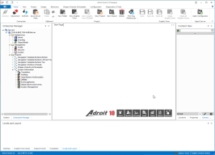 |

|
| Light | Dark |
Users can select which theme they want to use, when installing the SmartUI Operator, Designer or Server for the first time (in other words this is not displayed when any of these components are installed subsequently), from the following installation dialog:
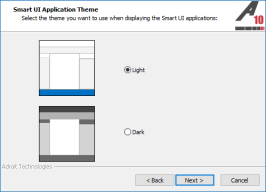
Tip: You change this theme at any time by opening the Adroit Config Editor and specifying the required option from the Theme list box at the bottom of this application.
The product icons have been revised and updated and standardised and are now classified using different colored vertical bars on their left hand side. Each color representing the following categories of function to make them easier to recognise and use:
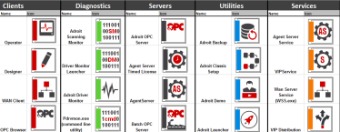
The  Adroit Utilities has been added to provide a central location from which the installed utilities can be launched, instead of installing a host of separate shortcuts for each individual utility. This shortcut is also installed on the Desktop.
Adroit Utilities has been added to provide a central location from which the installed utilities can be launched, instead of installing a host of separate shortcuts for each individual utility. This shortcut is also installed on the Desktop.
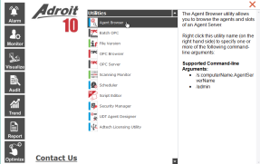
This application also describes their supported command line options and by right clicking the utility you can specify which command line options you want to use when launching the utility.
Added the Accumulator agent that calculates the difference in value (or delta) of a value that accumulates over time between successive events or over a specific time period (interval).
You can also specify a MS SQL database to maintain a history of these periodic counts/totals.
You can also configure alarm limits for both the (differential) value and rate of change in value for the current period.
Added the ICMP or PING agent that uses the Internet Control Message Protocol to troubleshoot network problems.
By continuously polling the specified remote IP address, this agent is therefore able to identify potential network problems as they occur by generating alarms when errors are obtained when attempting to contact the specified remote IP address and/or when the round trip time exceeds specified High and High-high times.
Added the DumpConfig agent, which simply stores the configuration of specific agents in an OLE DB database.
One example for its use is when you need to report on agents in the context of their configuration at the time of the report, alternatively this could be used as an extensive method of auditing changes made to specific agents.
The following primitive agent types have also been added to HMI mode: Real and Integer, however these agents (including Boolean) should ONLY be used where efficient use of memory is required.
PLEASE NOTE: These legacy primitive agents do not support Alarming and other SCADA functionality, use Analog/Digital agents instead!
The Analog agent now provides support for up to 51 bit numbers, in that the new maximum range is 2,000,000,000,000,000 for unsigned numbers or -1,000,000,000,000,000 to 1,000,000,000,000,000 for signed numbers.
To reduce the loss of accuracy in scaling caused by IEEE conversion issues, the Analog agent bypasses the scaling calculation, when the scaling is 1:1.
The AlarmManagement agent now provides the Integer kpiCalcRate slot that sets the maximum rate at which the KPIs should be calculated, in minutes, to improve the performance of this agent, which by default is set to 1.
If this slot is set to 0 then KPI calculations are NEVER executed on new or changed alarm occurrences and so also added the Boolean kpiCalcNow slot that pulses to allow users to perform a KPI calculation at any time, especially when they have set the kpiCalcRate slot to 0.
The Notify agent now provides a valueEx VARSTRING slot that is now SMS’d or emailed to subsystems that can handle long strings. It is also the slot that is saved to the WGP file.
Custom agents created via the Custom Agent Designer that require scripting intelligence now provides support for JavaScript (.jav file) or you can choose to use the existing VBScript (.vbs file).
The enhanced SNMPMgr agent replaces the legacy SNMPManager agent
This agent supports up to SNMP version 3 and allows an MIB file to be browsed in, in order to select which OID values you need to monitor and/or control and/or trap.
file to be browsed in, in order to select which OID values you need to monitor and/or control and/or trap.
Any existing SNMPManager agent is converted to SNMPMgr agent when the Agent Server loads.
This agent does not use .wgx files as now the OID configuration of your SNMPMgr agents are saved to the Agent database (.wgp) file directly.
Various improvements have been made in the way the SNMPMgr agent handles reporting the quality (the bad or good state) of the OID list linked tags.
For a new project, the available agent types are now classified into the following default groups to better facilitate the selection of the required agent when designing your system:
Basic: these agent types form the basic building blocks of a system and are used for gathering, handling and processing data to and from the physical external world.
Analog, Counter, Date, Digital, Expression, Marshal, MultiState, String, StringList, Timer
Advanced: these agent types provide powerful SCADA and integration functionality that allow the Basic agents to be alarmed and logged to databases and provides various means of reporting and/or controlling their values.
AgentGroup, Alarm, Alarm List, AlarmManagement, ARec, Command, DbAccess, DBLog, EventLogging, EventOutput, Multimedia, Notify, Recipe, Scheduler, Script, Shift, Statistical
MIS/MES: these are very specific and usually quite complex agent types used to do monitor, control and solve higher level shop-floor and general industrial challenges.
MaxDemand, OEE, PID
IT: these agent types facilitate the integration and management of SCADA and IT
Audit, DumpConfig, ICMP, Perfmon, SNMPMgr
System: these agent types are used internally to perform certain SCADA and other specific functions.
Note: Instances of these Agents are created automatically and cannot be added manually by the user.
Alias, Beeper, DataLog, Device, Hasp, Proxy, Scan, SystemDataLog, SystemInformation
Primitive: these agent types are primitive because they offer limited value and are limited in functionality when compared to the Basic agents, they are essentially single value containers.
Boolean, Integer, Real, Text and Frame
IMPORTANT: These agent types CANNOT be alarmed and their values are not scaled etc, so use the Basic agent types instead to represent your process values.
Hence the Agent filter section of the Agent Configuration dialog provides checkboxes for these default agent groups which if checked, allows you to determine which agent types are displayed in the Type list:
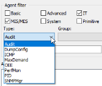
Simplified the configuration of scanning related settings when scanning tags, hence the following checkboxes appear in the Tag Scanning Configuration dialog:

Also these settings are now being stored in the Agent Database (.wgp) file along with the other scanning related settings, such as the scan address, scan rate etc, as an IO flags setting, which is displays as an additional column in the Currently scanned tags list.
For this reason Adroit WGP files for 10 are NOT backward compatible with previous versions, which saved these settings in the agent header slots.
Added support for NASA protocol drivers a sub-class of protocol drivers specifically written to take advantage of the scanning improvements and enhancements provided by NASA (New Adroit Scanning Architecture), such as demand scanning and highly optimised scan tasks.
The demand scanning of tags, ensures that tags are only communicated when they are being used. For example a graphic form is open with the tag in it. Once the graphic form closes, if this is the only subscription (reference) to this tag then the communication of that tag will stop.
Added the OPC UA client, a NASA driver, which communicates with OPC UA Servers in accordance with the OPC UA specification. OPC UA (OLE for Process Control Unified Architecture) is a standard specification that makes it possible for automation/control software applications and field systems/devices to interoperate and communicate data between each other. Since this is NASA driver it provides support for demand scanning and highly optimised scan tasks.
The logging to ADO (SQL) databases by the Datalog agent is disabled by default (the SQL... button of the Datasource field is hidden in the Edit Datalog agent dialog). This is to force users to use the DBLog agent instead, which logs data to SQL more efficiently.
Although if the Agent Server loads a legacy WGP file that ALREADY contains an ADO datalogging configuration, then the SQL... button of the Datasource field will be visible in the Edit Datalog agent dialog.
The Datalog agent should therefore only be used for proprietary logging and the datalog period (Length...) should not exceed what is required for operational trending purposes.
In other words, should an operator only need to see 24 hours of trend data to properly monitor and control his plant then the datalog period should only be set for 1 day. Historical data (i.e. data outside of the datalog period), if requested, will be retrieved from the backup files, if required.
When the allocated size of the datalog (.LGD) file is filled, it wraps (starts again at the beginning). At which time one or more datalog backup (.LGB) files are created to store this older (historical) data. The datalogging sub-system automatically retrieves this historical data from these files, when this data is required by trends (charts) or other requests for historical data.
In Adroit 10, the naming convention of these backup files have improved compared to Adroit  More details:
More details:
When creating monthly datalog backup files in Adroit
For instance:
1. A data value with a timestamp of 2017-11-21 10:00:00 would go to a backup file called 2017-11-21-m-11
2. A data value with a timestamp of 2017-11-22 10:00:00 would go to a backup file called 2017-11-22-m-11
In Adroit 10, the name of the backup file only specifies the year and month so that now only one file is created for the month.
For instance:
1. A data value with a timestamp of 2017-11-21 10:00:00 would go to a backup file called 2017-11
2. A data value with a timestamp of 2017-11-22 10:00:00 would also go to a backup file called 2017-11
Enhanced the Agent Browser utility, as follows:
This dialog is now resizable and when the selected slot is a LIST slot then a browse (...) button is displayed to the right of the slot value, which when clicked displays the contents of this LIST slot in a table with the required headings.
Double clicking an agent displays a dialog that allows you to view the real time status of an agent at a glance.
By default the Agent Browser displays a categorised view of the double-clicked agent, although you can check the Sorted checkbox to display an alphabetical listing.
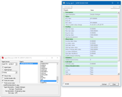
You can also click the Previous / Next buttons (or use the PAGE UP / PAGE DOWN keys) to view other agents of the selected agent type, in this manner.
When launched in admin mode you can add or remove agents from it using the + or - buttons of the Agents list.
Added the Ping tab to the Agent Server Monitor utility, which can help you determine whether any of the currently connected clients have connection issues to the Agent Server.
The alarm and event routes support lists of up to 256 characters instead of the legacy 80 characters.
You can change the SmartUI application theme at any time by opening the Adroit Config Editor and specifying the required option from the Theme list box at the bottom of this application:
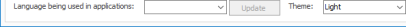
The Agent Server Configuration page now provides the Agent Server Service section that allows you to install the Agent Server service or change the configuration of a pre-installed Agent Server service, such as by changing the credentials of the log on user and/or specifying whether this service (and the SmartUI Server) service should automatically start.
The Driver Configuration page now provides the Advanced Driver Options button in the bottom right of this page, which allows global settings that affect scanning, to be added or modified, such as the one that enables or disables demand scanning.
Added the Object Model datasource, which enables you to enhance your existing wizards, by adding SCADA configuration to them.
It saves you SCADA engineering time by allowing you to reliably duplicate objects that can have all or most of their SCADA configuration pre-configured.
The objects that you can create will typically be items of equipment, like pumps or motors and can be anything that you have already created a wizard to represent.
You can also use the 
When creating an object template or an object instance, you are able to add one or more attributes or searchable strings or identifiers to them that you can use to filter or group the objects that you deploy in the Context View window.
It does not help you create the graphical representation of the object, it requires a working instance of a wizard to begin.
It does not help you create the SCADA configuration required by this object, it requires that all the necessary agents already exist for the wizard instance that you have selected and that these agents have already been configured.
Practical example:
Consider an industrial plant has a large number of similar pumps made by the same manufacturer, each of which had some characteristics that differed such as their power calibration.
The engineer would initially create a wizard that provides the graphical representation of this pump.
Then the engineer would implement the wizard and create the necessary SCADA configuration for this pump, such as its required scanning, logging and alarming.
The engineer would then test that this SCADA configuration was working correctly.
Then the engineer would create a template from this working wizard, ensuring that the characteristics that differed between these pumps would be substitutable.
Using this template the engineer would then create multiple instances of the pump, changing each of their differing characteristics as needed.
So each instance of this pump would then have their scanning, logging and alarming pre-configured.
Improvements made to the Object Model datasource:
The Context View window, logically groups or organises the deployed objects according to their defined attributes, so that they can be easily located and/or searched. In other words all the objects that have the SAME attribute are added a separate group or 'context'.
Furthermore this grouping is hierarchical so that the objects are further classified or grouped according to their specified values of this attribute. This allows you to see which objects have the same values and/or view all the values that have been specified for a particular attribute.
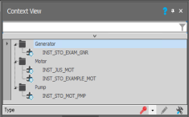
For instance, if an attribute defined the power rating for equipment, then you could see all your equipment that had the same power rating OR if an attribute defined the manufacturer, you could see how much of your equipment was made by each manufacturer.
Therefore by defining common attributes for your deployed objects, the Context View window can become a very useful tool in managing not just your deployed objects but your entire process.
While these automatically generated contexts cannot be edited, you can edit the Default context to create your own logical organisation of your objects and/or other data, by either:

, with or without the agents that are associated with their configured incidents.Nodes are like folders, each of which typically represent a specific contextual area and can contain additional nodes or a graphic form associated to them or have data elements and/or object model objects added to them.
You can also use the TemplateGOContextNav control to display the graphic forms associated with the nodes and/or added to the nodes of this Default context.
The Default context lends itself to the creation of object instances, especially those whose name and substitution/s use a predefined naming convention that specifies the context in which the instance is created.
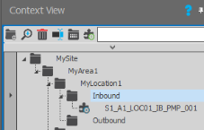
However, make best use of this feature you need to:
define the necessary hierarchy of Nodes, each of which typically represent specific contextual areas and especially specify each Node descriptor, which is typically a 3 character reference code for each contextual area.
if your object employs multiple substitutions to define its process variable names, then ensure that these substitutions are specified in the template in the logical order of the defined contextual areas.
The primary purpose of a graphic form is to display data elements (tags). Over the years a number of separate mechanisms have been created to make this process as easy as possible and/or to facilitate their duplication to save on their engineering time. This means that:
To work around this limitation, the following two utilities have been created which have different capabilities or uses:
The GLOBAL Find utility in the Project group of the Home tab of the SmartUI Designer ribbon, enables you to select one or more graphic forms of one or more projects to find where text, typically a tag (agent name), has been referenced and used, you can then export the list of located references to Excel.
Note: This utility only appears when the Spider Configuration Mode section of View tab of the Designer ribbon is set to Advanced, since it is intended for advanced users only.
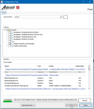
This utility can save much time when redesigning large projects and when creating and maintaining multiple SCADA systems in keeping track of your agents or other graphic form components.
Note: You need to close all open graphic forms before you can use this tool and you cannot perform any other action in the Designer while this utility is open.
The LOCAL Find and Replace utility in the graphic form toolbar, searches for the specified text, typically a tag (agent name), in the currently selected graphic form and unlike the other utility provides:
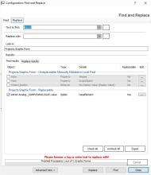
This utility also allows you to export the list of references to the searched for text to Excel, if needed.
Enhanced the Data Element Browser dialog by providing the ability to display the current value of the data elements you are currently or have previously selected, by clicking the  button in the top right hand corner, which adds the
button in the top right hand corner, which adds the  Watches column to the Recently selected elements list (when this is displayed) and the icon and current value to the right of the currently selected data element at the bottom of this dialog.
Watches column to the Recently selected elements list (when this is displayed) and the icon and current value to the right of the currently selected data element at the bottom of this dialog.
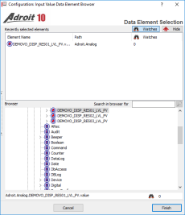
Added the facility to publish run-time versions of graphic forms, typically once a graphic form has been designed and is working as required.
This process creates an optimised run-time version of the graphic form for the Operator as it strips out the design-time information from the graphic form to reduce the size and complexity of the graphic form that is sent to the Operator, which also improves its loading time.
Simply click the Save and Publish graphic form toolbar button.
Made it easier to locate the wizards associated with wizard instances and/or edit the wizard instance, by providing a number of new right click menu options for wizard instances:
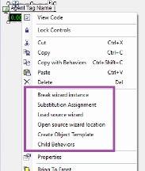
Enhanced the AlarmViewer control to support the inhibiting (shelving) of alarms and the acknowledgement of all the alarms from a new menu opened via the More options link (in the bottom right corner of the AlarmViewer control).
Enhanced the WebBrowser control to support the latest Web clients, which allows you to display content that was previously not possible, such as hosting the Adroit Report Suite in the Operator.
In addition to viewing the defined contexts in the Context View window in the Operator you can also use the TemplateGOContextNav control to display all the graphic forms and/or object instances that have been added to your defined contexts.
Typically this control is used to view the Default context in the Operator, to display the graphic forms associated to the nodes of this context and/or any additional graphic forms added to the nodes too.
This provides the Context View window pane on the left and a TemplateGO pane on the right to display graphic forms.
Enhanced the usability of the TrendConfigurator control by providing the following new features:
The TrendConfigurator control provides users the ability to configure and save trended values (pens) in a set, which they can then reload when they next logon. In this way, each user can customise the values trended using an associated LineChart control, according to their requirements.
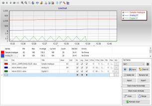
Enhanced all the charting controls to provide the following new features:
Provides the Context View window to display all the graphic forms and/or object instances that have been added to your defined contexts, such as the graphic forms associated to the nodes of your Default context.
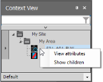
In addition to searching for your objects, you can also right click them to view the defined attributes of each object instance and/or show the children (sub-components) of any item in your contexts.
This was previously known as the Additional SCADA Components install.
Added the following components:
Note: Performance Anywhere is now installed as part of the main product install.
Removed the following unnecessary and unused components:
Dependency Walker - to troubleshoot applications or DLLs - since this is a developer tool not a user tool.
Updated the Geographic Information System (GIS) Component to version 2.0, which provides the following improvements:
In addition to static map pins, map nodes can also represent dynamic pins whose coordinates are specified by tag values and/or static regions.
Note:In addition to their default color, map nodes can visually indicate when they are in alarm and/ or display colors representing user-defined states.
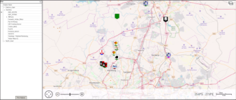
The following enhancements have been made to the SCADA Excel AddIn:
You can now view the historical data of a logged tag (agent.slot), which is configured via the Historical Data tool from the Project group:
The Configuration Templates dialog now provides an Include Header Slot checkbox so that these can also be displayed and selected when needed.
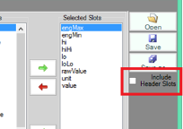
Click the Scan button.
However, you can still use the previous method that uses the Add to Agents Sheet tool to first add variables to the various agents sheets, for instance when you need to modify the various fields and agent settings before creating the agents and scanning, logging and alarming them.
Updated the look and feel of the demo and included the new
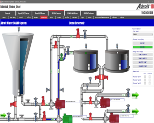
Provides a new look and feel for easier navigation:
Enhanced the free SCADA Report Pack, by adding an Agent Configuration Export report for your DumpConfig and DBLog agents and added 21 CFR Part 11-specific Audit Activity and Authorization Detail reports.
Added the OEE Report Pack, which provides four reports that analyse and provide management information about your configured OEE agents and their KPIs.
Improved the Alarm Management Report Pack, by adding the Interrupt Reasons and Interrupt Details reports.